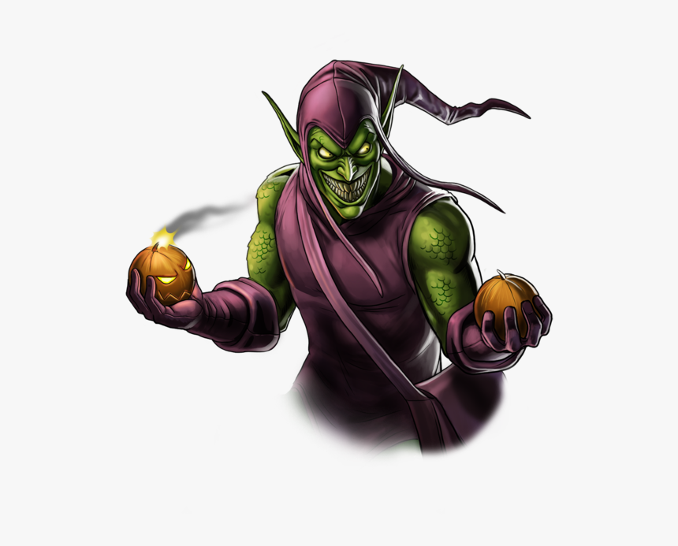

Who Will You Be?
In DND there is a whole host of interesting and unique playable races. Some like halflings, gnomes, dwarves, and goblins scurry about beneath the other larger races. Half orcs and goliaths are the perfect tanks, strong and foreboding. Some hail from the other planes of existence like gensai, tieflings, aasimar, and dragonborn. Or you could be boring and play a human I guess idk. Regardless of what race you pick we have an intuitive guide for how to play your new adventurer!
Backstory
Your Race will determine how others see you, what your background will be, and root you in the world of your Dungeon Master's Creation as your characters culture influences how they react to and see the world.
Aasimar
Aasimar are the children of humanoids and divine beings (gods, angels, planetar, etc.) that are placed in the world to defend goodness. They receive visions from a young age from a patron via dreams that guide them toward their destiny. Aasimar can live up to 160 years or as long as their host race, gain a +2 to charisma, and are resistant to necrotic damage.
Goblin
If you live in the English Speaking world you know what a goblin is, if not Google goblin, you clearly have internet service. They are green, angry, stabby, and selfish. Goblins live in clans and are usually weak but work together. Goblins that have magic are called Booyhags because magic is rare in their societies. Goblins gain a +2 to dexterity and +1 to Constitution and live up to 60 years.
